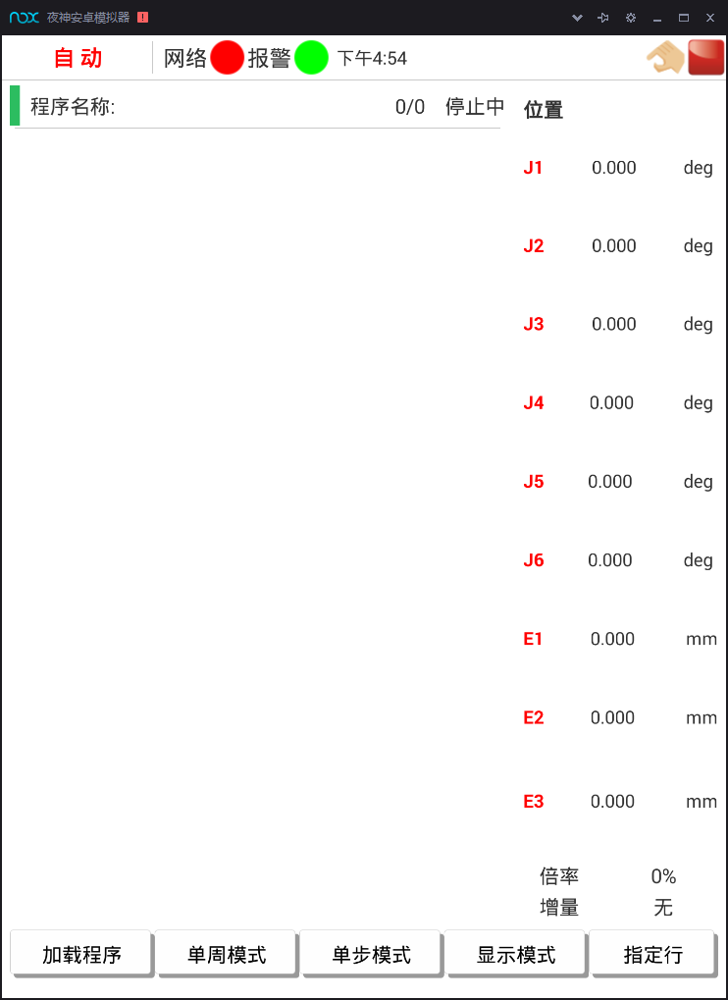
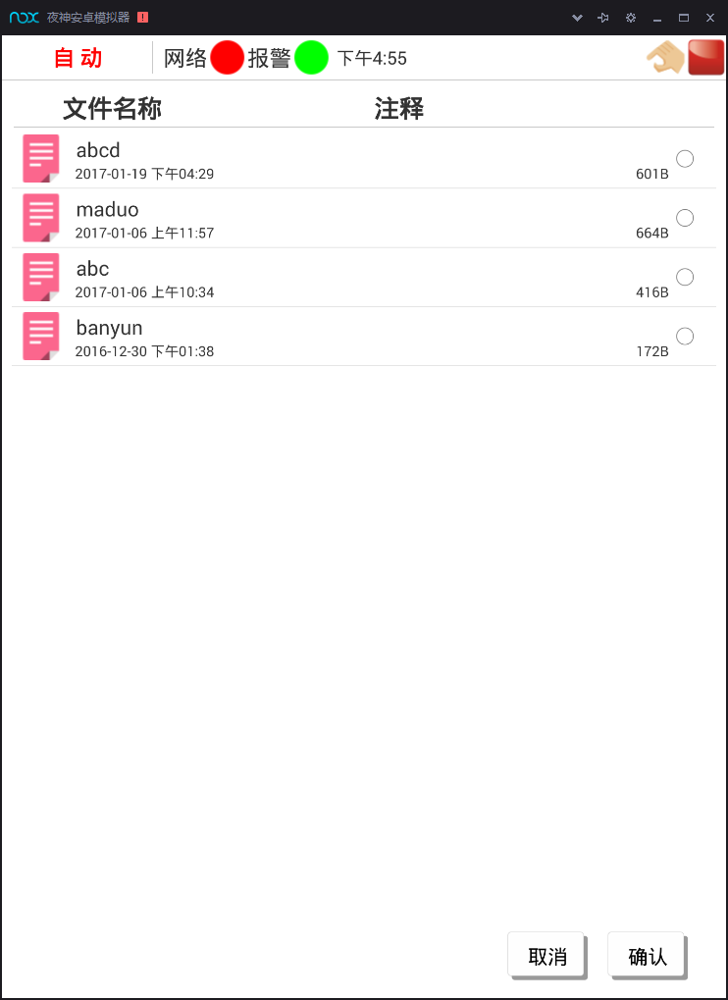

2.1新建、编辑和加载程序
2.1.6自动运行
在自动操作模式下可以运行机器人程序，任何程序必须先加载到内存中才能运行。自动运行界面如图2-12所示：

图2-12 自动运行界面
1、加载程序
用户可选择并加载现有的程序文件，启动加载了的程序后，机器人会根据程序文件的内容进行相关的动作。
点击"加载程序"，会显示当前可用的所有程序文件列表，如图2-13所示，选择所需加载程序文件并点击"确认"即可加载选定程序文件。

图2-13 程序加载界面
2、自动运行程序
在该界面中通过轴控制按钮可控制程序运行的启停。"连续/单步"按钮和"单周/循环"按钮可设置程序自动运行的方式。选择单步运行模式，系统会在运行完一行程序后停止，若为连续运行，则系统连续运行完程序。选择单周运行模式，系统会在运行完当前程序后停止；若为循环运行，则系统运行完程序后，再次从程序首行进行运行。该界面中的"关节/直角"按钮可切换程序运行时，不同类型坐标系下各轴的当前坐标值。点击修调值修改按钮"+"和"-"可修改程序运行时的修调值大小。
考核与评价
任务2.1 评价表
| 基本素养（30分） | ||||
|---|---|---|---|---|
| 序号 | 评估内容 | 自评 | 互评 | 师评 |
| 1 | 纪律（无迟到、早退、旷课）（10分） | |||
| 2 | 安全规范操作（10分） | |||
| 3 | 参与度、团队协作能力、沟通交流能力（10分） | |||
| 理论知识（25分） | ||||
| 序号 | 评估内容 | 自评 | 互评 | 师评 |
| 1 | 程序指令格式（10分） | |||
| 2 | 搬运类程序编制的掌握（10分） | |||
| 技能操作（45分） | ||||
| 序号 | 评估内容 | 自评 | 互评 | 师评 |
| 1 | 程序新建、编辑、加载(10分） | |||
| 2 | 关节位置数据记录（10分） | |||
| 3 | 搬运程序编制（10分） | |||
| 4 | 程序校验（10分） | |||
| 5 | 程序运行示教（10分） | |||
| 综合评价 | ||||